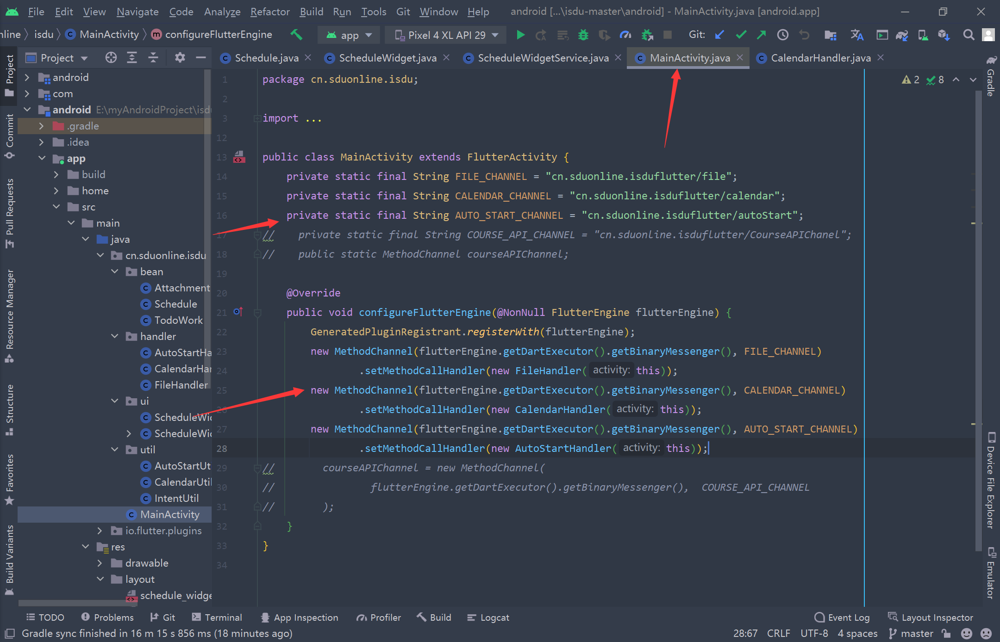
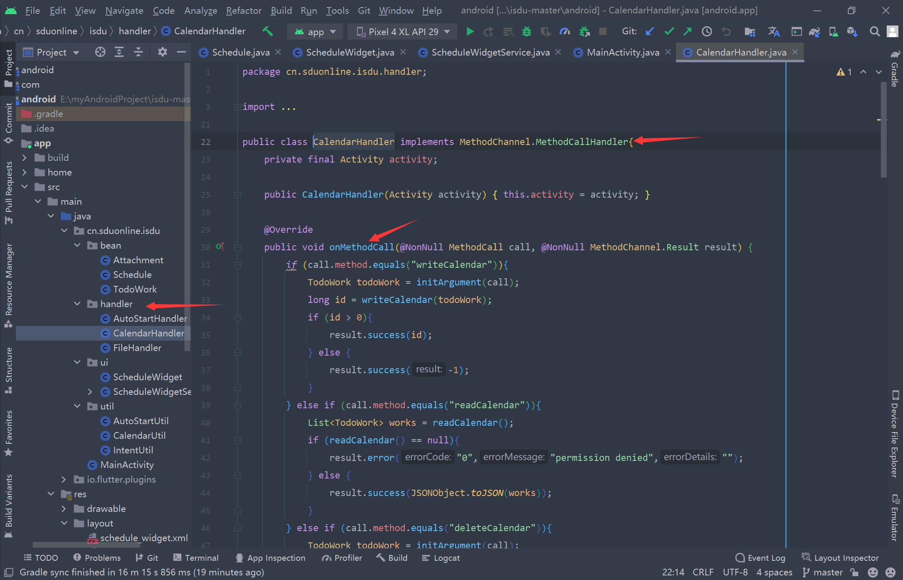
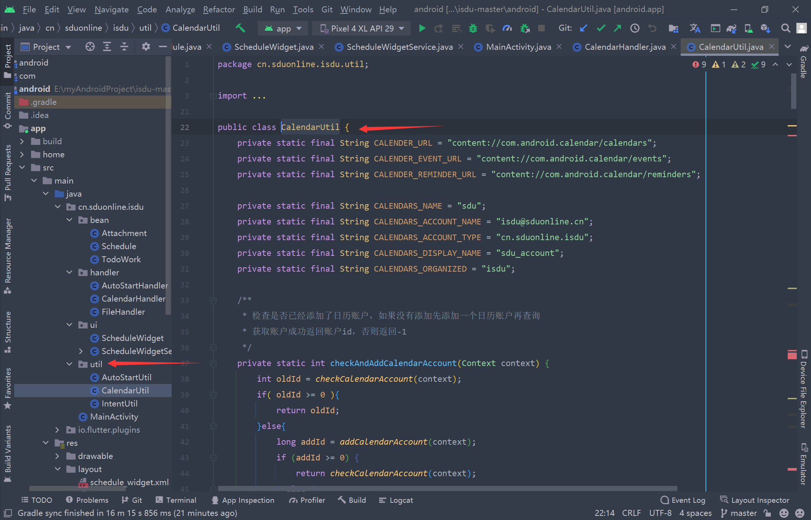

PlatformChannel
Flutter定义了三种不同类型的Channel，它们分别是
- BasicMessageChannel：用于传递字符串和半结构化的信息。
- MethodChannel：用于传递方法调用（method invocation）。
- EventChannel: 用于数据流（event streams）的通信。
三种Channel之间互相独立，各有用途，但它们在设计上却非常相近。每种Channel均有三个重要成员变量：
- name: String类型，代表Channel的名字，也是其唯一标识符。
- messager：BinaryMessenger类型，代表消息信使，是消息的发送与接收的工具。
- codec: MessageCodec类型或MethodCodec类型，代表消息的编解码器。
下面讲MethodChannel，其余两种方法基本一致
MethodChannel

样例，以下基于样例进行讲解
flutter端
1
2
3
4
5
6
7
8
9
10
11
12
13
14
15
16
17
| static const MethodChannel methodChannel = MethodChannel('samples.flutter.io/battery');
String _batteryLevel = 'Battery level: unknown.';
Future<void> _getBatteryLevel() async {
String batteryLevel;
try {
final int result = await methodChannel.invokeMethod('getBatteryLevel');
batteryLevel = 'Battery level: $result%.';
} on PlatformException {
batteryLevel = 'Failed to get battery level.';
print('enter exception');
}
setState(() {
_batteryLevel = batteryLevel;
});
}
|
初始化MethodChannel对象，通过该对象调用相应的安卓端某个方法，参数为方法名。
注意这是一个异步操作，也就是说调用该方法时并不能立即得到结果。
也可以这样写：
1
2
3
4
5
6
7
8
9
10
11
12
13
14
15
16
| Future<void> _getBatteryLevel() async {
String batteryLevel;
try {
int result = 0;
await methodChannel.invokeMethod('getBatteryLevel').then((value) {
result = value;
});
batteryLevel = 'Battery level: $result%.';
} on PlatformException {
batteryLevel = 'Failed to get battery level.';
print('enter exception');
}
setState(() {
_batteryLevel = batteryLevel;
});
}
|
通过调用.then获取异步函数的返回值value
安卓端
1
2
3
4
5
6
7
8
9
10
11
12
13
14
15
16
17
18
19
20
21
22
23
24
25
26
27
28
29
30
31
32
33
34
35
36
| public class MainActivity extends FlutterActivity {
private static final String BATTERY_CHANNEL = "samples.flutter.io/battery";
private int getBatteryLevel() {
int batteryLevel = -1;
if (VERSION.SDK_INT >= VERSION_CODES.LOLLIPOP) {
BatteryManager batteryManager = (BatteryManager) getSystemService(BATTERY_SERVICE);
batteryLevel = batteryManager.getIntProperty(BatteryManager.BATTERY_PROPERTY_CAPACITY);
} else {
Intent intent = new ContextWrapper(getApplicationContext()).
registerReceiver(null, new IntentFilter(Intent.ACTION_BATTERY_CHANGED));
batteryLevel = (intent.getIntExtra(BatteryManager.EXTRA_LEVEL, -1) * 100) /
intent.getIntExtra(BatteryManager.EXTRA_SCALE, -1);
}
return batteryLevel;
}
@Override
protected void onCreate(Bundle savedInstanceState) {
FlutterMain.startInitialization(this);
super.onCreate(savedInstanceState);
new MethodChannel(getFlutterView(), BATTERY_CHANNEL).setMethodCallHandler(
(call, result) -> {
if (call.method.equals("getBatteryLevel")) {
int batteryLevel = getBatteryLevel();
if (batteryLevel != -1) {
result.success(batteryLevel);
} else {
result.error("UNAVAILABLE", "Battery level not available.", null);
}
}
}
);
}
}
|
注意两边的methodChannel名字要相同，通过这个名字区分不同的methodChannel
通过call.method方法获取flutter的invokeMethod的参数并调用原生响应函数
这只是flutter调用原生的例子，原生调flutter用到的不多，用法类似。
以i山大为例
1.在MainActivity内注册methodChannel

2.handler文件夹下存放handler，引用MethodChannel.MethodCallHandler接口，重写onMethodCall方法。

3.util文件夹下存放相应的方法（被调用的所有方法）

原理可以参考闲鱼技术的博客
三种Channel的样例
桌面小组件
建议直接参考官网
i山大内的样例可以直接参考ScheduleWidgetService、ScheduleWidget两个类
参考
https://flutter.cn/docs/development/platform-integration/platform-channels
https://www.jianshu.com/p/39575a90e820
https://developer.android.com/guide/topics/appwidgets?hl=zh-cn